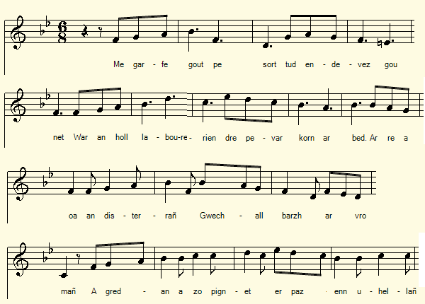
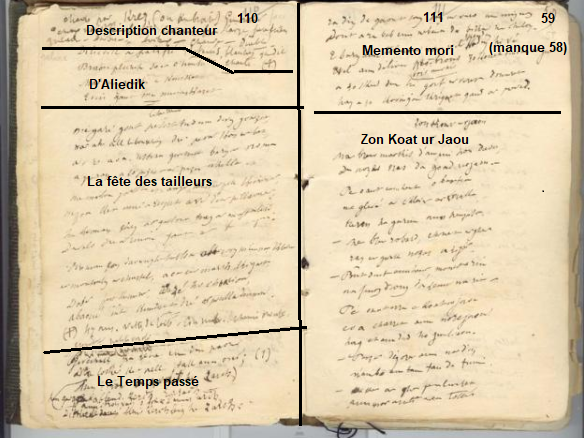

|
A propos de la mélodie Inconnue. L'air choisi tout à fait arbitrairement, précède, dans le recueil cité ci-dessus, le N° 24, "Diredit holl d'an taolennoù" qui pourrait être celui qui accompagnait le chant suivant. A propos du texte La mention à la strophe 3 d'une "Fest kemenerien" (fête des tailleurs), de Morlaix, de son château et d'un pauvre cheval tout écorché ("kignet"), à force d'avoir été conduit parmi les mares ("poulladenn" ="réserve dans une mare") suggère un rapport avec une fête corporative. Il ne semble pas que le chant se soit prolongé sur un feuillet N° 58 qui a disparu du carnet. On remarque certes que le feuillet suivant, à droite, porte le N° 59, ce dont la pagination effectuée ultérieurement par le fils de La Villemarqué ne tient pas compte: la page est numérotée 111. Mais le bas de la page 110 qui comprend successivement:(cf. illustration) - le portrait du chanteur Guiomar, - les 4 premiers vers d'"Aliette Le Palafré", - les 3 quatrains du présent chant, a du resté vide pendant un certain temps, avant d'accueillir 2 strophes (dont une sous 2 formes) du chant "Le temps passé", qui semble noté, pour l'essentiel dans des espaces du carnet N°2 restés vides. De ce fait la page 111 commence par 6 vers (3 distiques) d'un chant sans rapport avec les précédents, une méditation sur la mort en lien avec les "taolennoù", ces tableaux de mission imaginés à partir de 1608 par Michel Le Nobletz (1577-1652) et également utilisés par son successeur, le bienheureux Julien Maunoir (1606-1683). La fête des tailleurs de Morlaix Elle est évoquée dans le "Dictionnaire historique et géographique de la province de Bretagne" de Jean Ogée, à la p.76 du Tome II de 1845 composé par A. Marteville et P. Varin, assisté de De Blois, Ducrest de Villeneuve, Guépin de Nantes et Lehuérou: "Jadis on connaissait à Morlaix presque autant de fêtes qu'il y avait de principaux corps de métiers.Il y avait entre autres la fête des tailleurs qui se célébrait à Notre-Dame-du-Mur. Après une messe chantée, les tailleurs présentaient un mouton blanc que le père abbé, escorté de toute la communauté conduisait à l'hospice." L'église, située en haut de la ville, fut vendue après la révolution à un entrepreneur qui se servit des pierres de la nef. Le clocher de Notre-Dame-du-Mur s'effondra en 1806. Le château bâti vers l'an mille, servit de refuge aux opposants au roi lors de la Ligue au XVIème siècle. Il fut détruit après la reddition des ligueurs. Seuls des arbres signalent le lieu qui domine la ville. La chanson semble indiquer que cette tradition s'était maintenue sous une forme dégradée au grand dam du pauvre cheval utilisé pour convoyer le matériel nécessaire à l'organisation de la fête. Un autre cheval martyr Voici ce qu'on pouvait lire dans l'Eclaireur du Finistère du samedi 7 au samedi 28 septembre 1912: "Cruauté: Nous relevons sur les registres du commissariat de police la note suivante: Infraction à la loi Grammont. Dimanche 8 septembre, vers 4 heures du soir, j'ai vu descendre de la gare un malingre cheval brun, attelé, qui montrait sous son harnachement de larges plaies sanguinolentes. L'ayant rejoint quelques minutes plus tard sur la place de Viarmes, au moment où son conducteur le dételait, j'ai constaté de nombreuses et larges écorchures, la croûte de l'une venant d'être détachée par le collier. Sur ma demande, le conducteur m'a dit que le propriétaire était X..., que ce cheval, écorché depuis longtemps, était resté deux jours à l'écurie et qu'aujourd'hui c'était son dernier jour de travail, X... devant l'expédier demain à une boucherie hippophagique de Brest. Ainsi voilà un animal, martyrisé par un maitre sans pitié, qui a circulé pendant longtemps sous le regard indifférent du public et des agents de l'autorité. Je prie M. le Commissaire de police d'ordonner rigoureusement à tous ses agents de ne pas attendre les plaintes du public pour dresser contravention, mais de faire eux-mêmes des constats toutes les fois que des actes repréhensibles auront pour résultat d'occasionner aux animaux des souffrances que la nécessité ne justifie pas. L'agent transmettra la déclaration qui lui sera faite ou le constat qu'il aura fait lui-même àl'autorité dont il relève, commissaire de police, puis juge de paix. En effet, tout citoyen a le droit d'intervenir dans les cas précités et de signaler aux agents de l'autorité une contravention ou un délit; or l'infraction à la loi Grammont est une contravention que chacun a le droit de signaler à la police et aux gendarmes. Morlaix, lundi 9 septembre 1912. Frédéric Hervé". |
About the tune Unknown. This air, chosen quite arbitrarily, precedes, in the above hymn collection, N ° 24 titled "Diredit holl an taolennoù" which could be the vehicle of the next song in the manuscript. About the lyrics Stanza 3 of the song at hand mentions a "Fest kemenerien" (tailors' feast), the town Morlaix, its castle and an unfortunate nag completely skinned ("kignet"), for having carried heavy burdens of feast gear across rain ponds ( "poulladennoù"). It suggests a connection with a corporate celebration. It is unlikely that the song was continued on a possibly missing sheet No. 58. It is remarkable that the next sheet, on the right hand side, should bear the number 59, instead of 58, a gap which the subsequent pagination by La Villemarqué's son does not take into account: the next page is numbered 111. But the bottom of the page 110 which successively includes (see pict.): - the portrait of the singer Guiomar, - the first 4 lines of "Aliette Le Palafré", - 3 quatrains of the present song, was left empty for a while, before hosting 2 stanzas (including one in 2 versions) of the song "In Olden Times", which appears to be recorded, chiefly in spare spaces in notebook N ° 2. Therefore page 111 begins with 6 lines (3 stanzas) of a song evidently unrelated to the previous ones, a meditation on death in connection with the "taolennoù", the large pictures imagined in 1608 by Michel Le Nobletz (1577-1652) and also used by his successor, the blessed Julien Maunoir (1606-1683) to teach the faithful attending their missions in Lower Brittany . Feast of the Morlaix taylors' guild It is addressed in Jean Ogée's "Historical and geographic dictionary of the province of Brittany", on p.76 of Volume II of 1845 composed by A. Marteville and P. Varin, assisted by De Blois, Ducrest de Villeneuve, Guépin de Nantes and Lehuérou: "In the past we knew almost as many festivals in Morlaix as there were main guilds. There was, among other things, a feast of the tailors' guild which was celebrated in the upper town church Notre-Dame-du-Mur. After a sung mass, the tailors presented to the Rev; Abbot a white sheep, which was led to the hospice, escorted by the whole community." The dilapidated church, was sold after the Revolution to a quarry operator who disposed of the stones of the nave. The bell tower of Notre-Dame-du-Mur collapsed in 1806. The castle, built around the year 1000, had served as a place of safety for opponents to the king during the League wars in the 16th century. It was destroyed after the surrender of the Leaguers. Only trees nowadays mark the place which dominates the city. The song seems to indicate that this traditional feast was somehow maintained much to the detriment of the poor nag used to convey the gear necessary for the festival. Another martyr horse Here is what we could read in "L'Eclaireur du Finistère" from Saturday September 7 to Saturday September 28, 1912: "Cruelty: We read on the registers of the police station the following note: Breach of the Grammont law. Sunday September 8, around 4 o'clock in the evening, I saw a sickly bay horse coming down from the railway station, with large bloody wounds under his harness. Having found him a few minutes later on the Place de Viarmes, when his driver unhooked him, I noticed many large grazes and scratches, the crust of one having just been torn off by the halter. At my request, the driver told me that the owner was X ..., that this horse, who had been flayed for a long time, was to stay two days in the stable, since today was his last day of work and X ... was sending him tomorrow to a hippophagic butcher's shop in Brest. So here is an animal, martyred by a merciless master, that went about for a long time under the indifferent gaze of the inhabitants and the police. I ask the Commissioner of Police to rigorously order all of his officers not to wait for complaints from the public before issuing a ticket, but to make their own observations, whenever reprehensible acts result in causing animal suffering that necessity does not justify. The officer will transmit the declaration made to him or the report he made himself to the relevant authority, police commissioner and then Justice of the peace. Every citizen has, indeed, the right to intervene in the aforementioned cases and to report to the agents of the authority a delict or an offense; And a breach of the Grammont law is an offence that everyone has the right to report to the police and the gendarmes. Morlaix, Monday September 9, 1912. Frédéric Hervé ". |

|
BREZHONEG (Stumm KLT) FEST AR C'HEMENERIEN Page 110 1. Me garfe gout pe sort tud en-devez gounezet War an holl labourerien dre pevar korn ar bed, Ar re a oa 'n disterrañ gwechall barzh ar vro mañ A gredan a zo pignet er pazenn uhellañ. 2. Me am-boa gwel't un amzer, n'eus ket pell, kemener, N'az-poa ket mui a respet a voe dur pilhaouer, Ha bremañ c'heus ar galoud hag ar an affronteri. Da vale dre ar ruioù gant ar friponeri 3. Bremañ eus daou-ugent vloaz hervez mem-eus klevet Er Montroulez er Chastell, a oa ur march kignet, D'ober fest kemenerien, du-se ha choarioù, Abaoe int konduet dre ar poulladennou... Page 111 / 59 KLT gant Christian Souchon (c) 2020 |
FRANCAIS LA FETE DES TAILLEURS Page 110 1. J'aimerais que l'on me dise, de tous les métiers Lequel prime sur les autres dans le monde entier, La classe la plus ignoble en ce pays jadis Tiendrait le haut du pavé, semble-t-il, aujourd'hui. 2. Je me souviens d'un temps proche où, tailleur, tu n'avais Droit à guère plus de respect que le chiffonnier, Désormais t'échoient le pouvoir et l'effronterie De promener dans les rues ta friponnerie 3. On m'assure que cela fait bientôt quarante ans Qu'au château de Morlaix, un cheval sanguignolent Pour célébrer la fête des tailleurs et leurs jeux Est conduit parmi les flaques, pauvre malheureux. Page 111 / 59 [Il doit manquer 1 feuillet numéroté 58 par La Villemarqué. Les 6 vers qui suivent appartiennent sans doute à un autre chant.] Traduction Christian Souchon (c) 2020 |
ENGLISH FEAST OF THE TAILORS GUILD Page 110 1. I would like to be told, of all trades Which takes precedence over others around the world, The most despicable class in this country once Holds the upper hand, it seems, today. 2. I remember a close time when, as a tailor, you had Right to little more respect than the ragpicker, Now the power and the brazenness fall to you To take your rascality through the streets. 3. I am assured that it has been almost forty years That at Morlaix castle, a bloody horse To celebrate the tailors' day and their games Is led among the puddles, poor unhappy nag. Page 111/59 [1 sheet numbered 58 by La Villemarqué must be missing. The following 6 lines probably belong to another song.] |